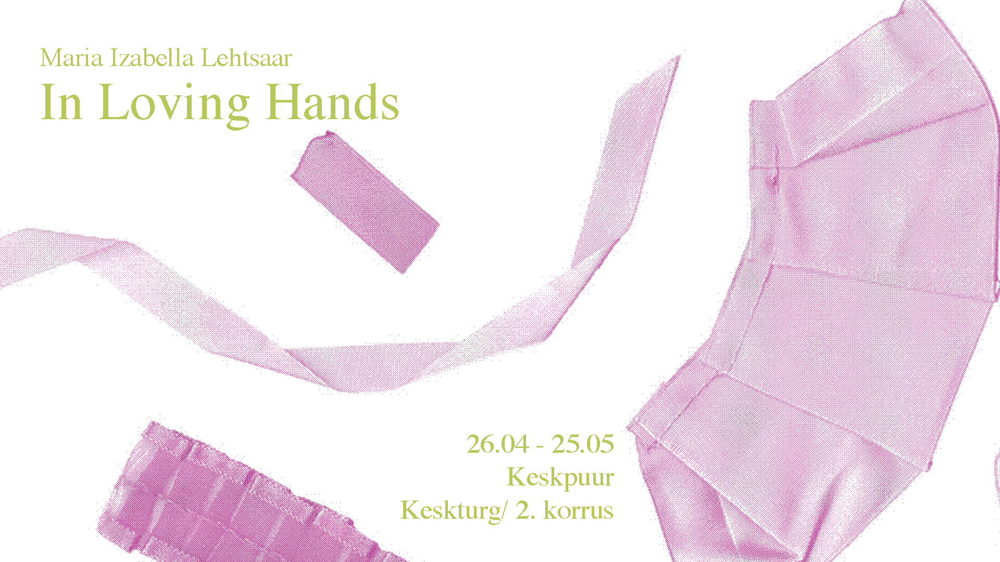

In Loving Hands
Maria Izabella Lehtsaar
25.04 - 25.05.2026

------------
In Loving Hands
Opening : 25.04.26, 13:00
The distorted eyes of passersby reflecting from the surface of the shiny shoes. Slipping your fingers through the curling edges of the cushion, chatting with headless personalities until the morning. Standing six feet on the ground, the same tattoo on the first, the second, and the third. A three-ring carabiner on the outer side of the ankle. The protruding leg of a fragmented body, a vinyl mold smoothly wrapped around the toes. A hand reaching toward the closed shoe buckle. It draws attention to the practical solution – closed, open, closed, open, closed.
The illustrative function of the carabiner, its inevitable permanence with a slight hint of fading over the years. Or a delicate possibility to cut through the metal while shaving legs. A thoroughly dissected Ursa Major, about seven birthmarks on the left arm. The weave of the fabric runs in the opposite direction with its pink background. A minimalistic cut.
A silky sleeve gently falling on moisturized skin, the smooth top of a permanent iceberg and a guarantee against every possible change. A pair of tights invisible to the bare eye frames ink-filled holes in the skin, one-by-one, and the embroidered cartography of blue blood in veins. The tattooed facade of a portable feeling, balustrade sewn into pores. Holding arms in a ninety degree angle. The statue of permanence, holding a flame, the magnificent, magnificent body-of-someone, aromatic flesh giving an oath to taking a risk.
“In Loving Hands” is a photo series by Maria Izabella Lehtsaar, depicting identical tattoos of a friend group. Influenced by the notion of commodity fetishism “In Loving Hands” highlights the artwork’s status as a commodity, its undeniable beauty, relevance and perfectly transparent complexity.
Text by Heneliis Notton
The exhibition was supported by Estonian Cultural Endowment, Tuletorn Brewery and Vaat Brewery.